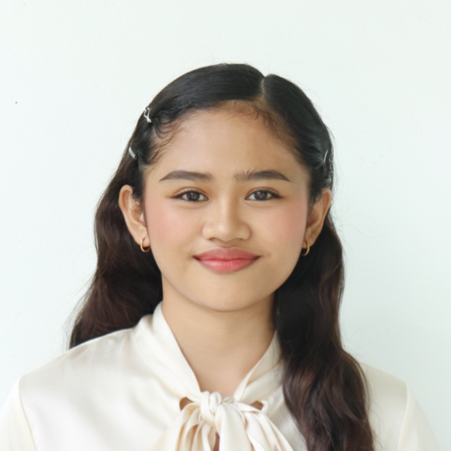

Jhadieja D. Bargado

Objective
To obtain valuable knowledge and skills to complement those
that I’ve learned from school in an actual work environment.
In return, I will offer my services and determination to be
one of your assets throughout the duration of my work.
Education
-
College
- University of Northern Philippines
- Tamag, Vigan City, Ilocos Sur
- Bachelor of Science in Computer Science
- 2024-Present
-
Secondary
- Narvacan National Central High School
- Paraton, Narvacan, Ilocos Sur
- 2018-2024
-
Elementary
- Cagayungan Elementary School
- Cagayungan, Narvacan, Ilocos Sur
- 2011-2018
Work Experience
-
Work Immersion: Sto. Nino Hospital (2024)
- Assisted with basic clerical and administrative tasks.
- Organized and handled documents.
- Assisted staff with assigned tasks.
Skills
Soft Skills
- Critical Thinking and Problem-Solving
- Effective Communication and Team Collaboration
- Time Management and Organizational Skills
- Adaptability and Strong Work Ethic
- Leadership and Interpersonal Skills
Technical Skills
- Computer Literacy
- Information Management
- Technical Proficiency
- Documentation and Technical Writing Basics
- Canva and Graphic Design
- Video Editing
Awards and Achievements
- Academic Achiever (2018)
- With Honors (2018-2023)
- With High Honors (2024)
- Dean's Lister (2024-2026)
- Math in Motion 2nd Placer (2025)
Others